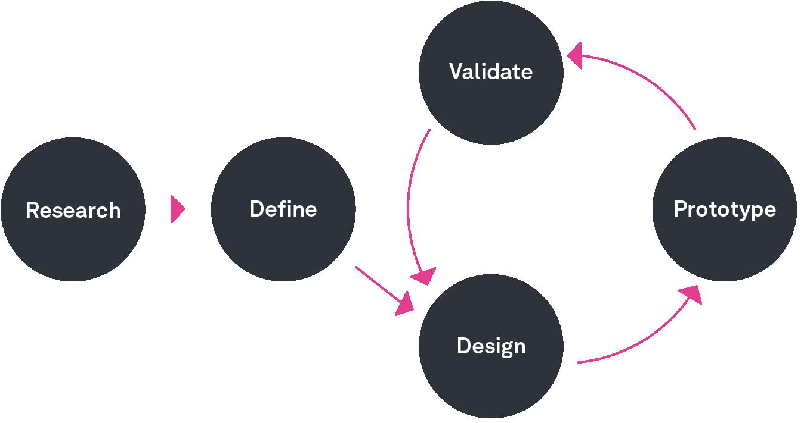
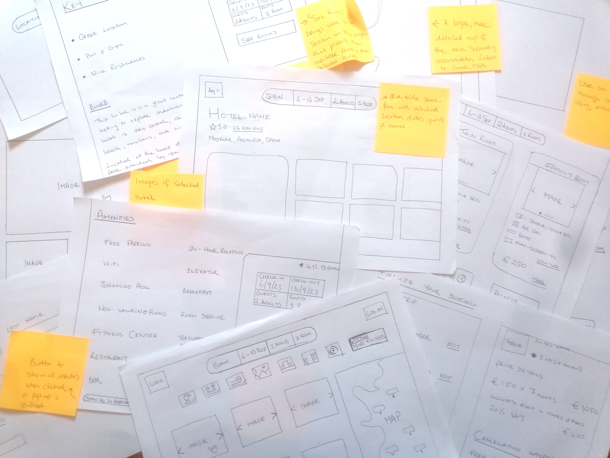
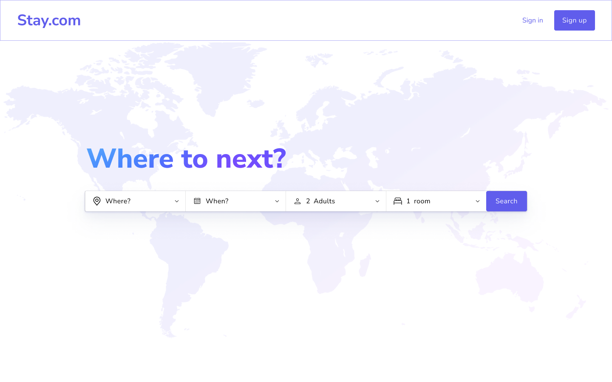

Stay.com - Hotel Booking Platform Redesign
An Enhanced Hotel Booking Experience

Stay.com is a desktop app developed during my UX Design Professional Diploma, aimed at addressing common user experience issues found in hotel booking platforms. This project builds on successful design patterns while resolving usability challenges, creating a streamlined, user-friendly booking process.
The Problem
Many hotel booking websites suffer from poor usability, frustrating users with confusing navigation, unclear information, and inefficient booking processes. The goal was to create a website that prioritises intuitive design, clarity, and efficiency, delivering a smoother and more pleasant booking experience.
The Process
To identify key issues, I conducted user research through competitive benchmarking, surveys, and user testing. These findings were synthesised into six primary usability problems using affinity mapping, customer journey mapping, and user flow diagrams. Low-fidelity sketches were developed, followed by a high-fidelity interactive prototype in Figma, which was tested for effectiveness and refined based on user feedback.
Research
To ensure credible findings, I applied a triangulation method, incorporating competitive benchmarking, user surveys, interviews, and usability testing. This cross-referenced data helped identify patterns and solidify insights, ensuring that the design decisions were based on comprehensive research.
Research Tools
A combination of methods was used to gather insights, including surveys, user interviews, competitive analysis, and usability testing.
These methods helped synthesise unstructured data into meaningful insights that informed the design decisions throughout the project.
Analysis
Using tools such as affinity mapping, customer journey maps, and user flow diagrams, I synthesised unstructured data into key insights that directly influenced design decisions. The analysis uncovered the following six key issues:
- Interface Design: Busy interfaces with poor readability (small fonts and low contrast) frustrated users and increased cognitive load.
- Flow Design: Users frequently experienced disjointed flows, leading to restarts and premature decisions.
- Search Functionality: Buggy calendars and difficulties finding hotel locations made search tasks cumbersome.
- Option Comparison: Excessive scrolling and information overload prevented users from effectively comparing hotels.
- Adding Extras: Unclear descriptions, confusing pricing, and inconsistent options created friction when adding extras.
- Booking Completion: The lack of transparency in the final booking steps created uncertainty for users.
Design Implications
These findings had a significant impact on the design:
- The interface needed to be simplified, with improved readability and reduced clutter.
- The flow had to be redesigned to offer more flexibility and guide users through a seamless booking process.
- The search experience required a more intuitive and reliable calendar and map interface.
- Option comparison needed to be streamlined with better filters and layouts to reduce scrolling.
- Extras had to be presented clearly, with dynamic feedback to avoid confusion.
- Booking completion required enhanced transparency and a clear summary for final confirmation.
Design
The design process involved moving from initial sketches to prototypes, and finally to implementing solutions that directly addressed the findings from the analysis.
Sketches
I started with low-fidelity sketches to quickly iterate on potential solutions. These sketches helped visualise the booking flow, user interface, and layout while allowing me to identify and address potential issues early in the process.
Sketch Example (with annotations):
- Arrow pointing to sketch layout: "Initial wireframe sketch for the streamlined booking flow."
- Arrow pointing to navigation: "Concept for breadcrumb navigation to enhance user orientation."
- Arrow pointing to calendar sketch: "Early design for the booking calendar to improve usability."
Prototyping
After the initial sketches, I created a medium-fidelity interactive prototype using Figma. This prototype allowed me to refine the booking flow, navigation elements, and interaction design, and also helped me gather feedback from user testing.
Design Solutions
After gathering feedback from user testing and incorporating findings from the analysis, I implemented the final design solutions. These solutions were aimed at improving usability, streamlining the booking process, and resolving the key pain points identified during research.
Streamlined Interface Design
The interface was simplified to focus on key booking elements, reducing cognitive load. By minimizing clutter, users were able to focus on essential tasks, which helped reduce the cognitive load.

Optimized Flow Design with Progressive Disclosure
The booking flow was restructured using progressive disclosure, where users are guided step-by-step through the process. Breadcrumb navigation was added to help users track their progress and backtrack easily.

Enhanced Search Functionality
The calendar and map functionality were redesigned to make hotel location searches easier. The interactive calendar provided hover highlights and real-time feedback, while the map dynamically showed hotels based on the user's selection.

Improved Option Comparison
A horizontal filter bar was added to help users quickly refine hotel options, while a grid layout was implemented to display more options without excessive scrolling.

Clearer Addition of Extras
A dedicated extras modal window was introduced to provide clear descriptions and pricing. The booking summary dynamically updated to reflect the total cost as users added or removed extras.

Improved Booking Completion Transparency
A detailed booking summary was added to ensure users could review all their selections, including dates, room type, and extras, before confirming their booking. Editable fields were provided to allow users to make last-minute changes without restarting.

Evaluative Testing
I conducted user tests to evaluate the design's effectiveness by having users book a hotel room through the prototype. Key findings include:
- Interface Design:Generally well-received, though text size was occasionally noted as too small.
- Flow:Smooth overall, though breadcrumb navigation had minimal impact.
- Search:Calendar interaction was smooth, but map functionality needed refinement.
- Option Comparison:Users found it easy to compare options but wanted more overview information.
- Adding Extras:Clear navigation, though some users found checkboxes confusing.
- Booking Completion: Users were satisfied with the summary but noted that text size could be larger.

Further Development
Based on user feedback, I identified key areas for future improvement:
- Increase text size in key areas for better readability.
- Provide more overview information to reduce uncertainty during option comparison.
- Ensure breadcrumb navigation is consistently used throughout all stages of the booking process.
- Refine map functionality for smoother interaction.
- Clarify the purpose of checkboxes in the extras window to reduce confusion.